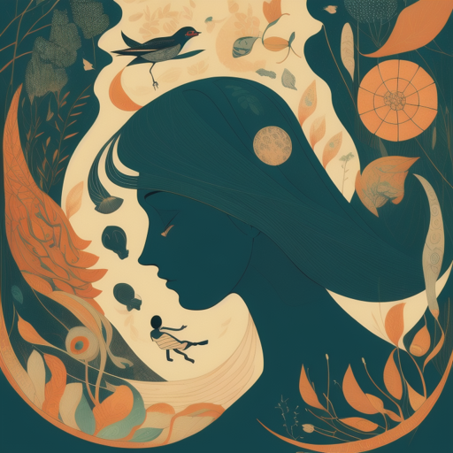
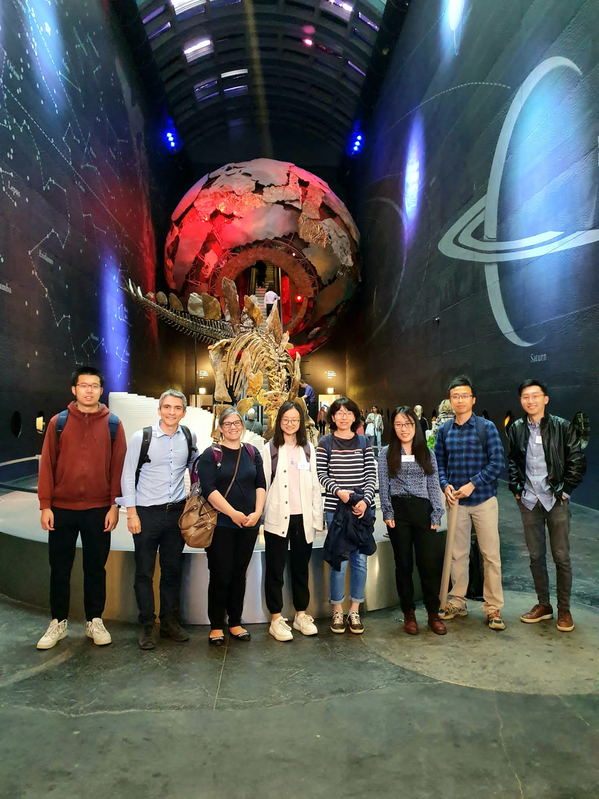

- Jiazheng Li: Distilling ChatGPT for Explainable Automated Student Answer Assessment [paper]
- Jiazheng Li and Runcong Zhao: OverPrompt: Enhancing ChatGPT Capabilities through an Efficient In-Context Learning Approach [paper] [poster]
- Xingwei Tan: Event Temporal Relation Extraction with Bayesian Translational Model [paper]
- Hanqi Yan: Distinguishability Calibration to In-Context Learning [paper]
- Runcong Zhao: Cone: Unsupervised Contrastive Opinion Extraction [paper] [poster]
- Event Temporal Relation Extraction with Bayesian Translational Model [paper]
- A User-Centered, Interactive, Human-in-the-Loop Topic Modelling System [paper]
- Distinguishability Calibration to In-Context Learning [paper]
- NapSS: Paragraph-level Medical Text Simplification via Narrative Prompting and Sentence-matching Summarization [paper]
- PANACEA: An Automated Misinformation Detection System on COVID-19 [paper]
- K-hop neighbourhood regularization for few-shot learning on graphs: A case study of text classification [paper]
- CK-Transformer: Commonsense Knowledge Enhanced Transformers for Referring Expression Comprehension [paper]
- An Extended Sequence Tagging Vocabulary for Grammatical Error Correction [paper]
- Reading and Reasoning over Chart Images for Evidence-based Automated Fact-Checking [paper]

Invited Keynote on Interpretable Natural Language Understanding
Yulan He is invited to give a keynote on "Interpretable Natural Language Understanding" at CIKM 2023 in October 2023.
Yulan He is invited to give a keynote on "Interpretable Natural Language Understanding" at CIKM 2023 in October 2023.
Tutorial on Uncertainty Quantification for Text Classification in SIGIR 2023
Yulan He and Lin Gui from KCL, together with Dell Zhang, Murat Sensoy, Masoud Makrehchi, Bilyana Taneva-Popova at Thomson Reuters, will deliver a tutorial on Uncertainty Quantification for Text Classification and language models in SIGIR 2023 in July 2023.
Yulan He and Lin Gui from KCL, together with Dell Zhang, Murat Sensoy, Masoud Makrehchi, Bilyana Taneva-Popova at Thomson Reuters, will deliver a tutorial on Uncertainty Quantification for Text Classification and language models in SIGIR 2023 in July 2023.

Invited Talk on Interpretable Language Understanding
Yulan He is invited to give a talk on interpretable language understanding in NLDB 2023 in June 2023.
Yulan He is invited to give a talk on interpretable language understanding in NLDB 2023 in June 2023.
Talk in the King’s AI Festival: Have LLMs Solved NLP?
Yulan He delivered a talk in the King’s Festival of AI that delved into the question of whether Large Language Models have successfully overcome the challenges of NLP by examining their capabilities in a range of NLP tasks. She concluded her talk with the exciting future of AI-driven language understanding. [Slides]
Yulan He delivered a talk in the King’s Festival of AI that delved into the question of whether Large Language Models have successfully overcome the challenges of NLP by examining their capabilities in a range of NLP tasks. She concluded her talk with the exciting future of AI-driven language understanding. [Slides]

KCL NLP Group Attended the Turing AI Fellowship Event in London in May 24-25, 2023
Yulan He joined the Turing AI Fellows Panel on the “Progress and Future Directions”. PhD students from the KCL NLP group presented the following papers:
Yulan He joined the Turing AI Fellows Panel on the “Progress and Future Directions”. PhD students from the KCL NLP group presented the following papers:
Nine Papers Accepted to EACL 2023
The NLP group has nine papers accepted to EACL 2023.
The NLP group has nine papers accepted to EACL 2023.
Invited Talk on NLP Research to Drive FinTech
Yulan He gave an invited talk on “NLP Research to Drive FinTech: Now and Next” in the Gillmore Centre for Financial TechnologyF at Warwick Business School in December 2022.
Yulan He gave an invited talk on “NLP Research to Drive FinTech: Now and Next” in the Gillmore Centre for Financial TechnologyF at Warwick Business School in December 2022.
Please note that all images displayed in this tab have been generated using DALL-E.